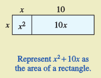
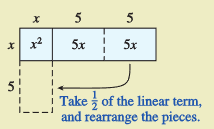
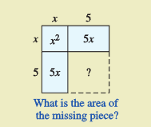
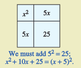
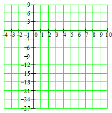

This is a skills lesson on completing the square. You may want to begin by presenting a quadratic equation that cannot be solved by factoring. Explain that our goal is to turn any quadratic expression into a square of a binomial, so that we can then solve the equation by extraction of roots. It is also helpful to tell students that although the quadratic formula is usually faster than completing the square, we’ll need this skill for other applications (conic sections) later on.
Section 3.4 Completing the Square
Activity 3.4.1. Squares of Binomials.
- Write a formula for the square of a binomial:\begin{equation*} (x+p)^2 = \end{equation*}Notice that the constant term of the trinomial is , and the coefficient of the linear term (or \(x\)-term) is .
-
Now we’ll reverse the process. Add a constant to the expression that will turn it into a perfect square:\begin{equation*} x^2-16x+\fillinmath{XXX} = (x \fillinmath{XXX})^2 \end{equation*}(Do you see how to find the constant? Here’s what you do:)First find \(p:~~~~~~~~~~~~~2p=-16\text{,}\) so \(p=\frac{1}{2}(-16)=\)Then find \(p^2:~~~~~~~~~~~~p^2=\)We can turn any quadratic expression into a perfect square by adding the correct constant. This process is called completing the square.
-
Complete the square and write the result as the square of a binomial.
- \(\displaystyle x^2 + 18x + \fillinmath{XXX} = \)
-
\(x^2 - 14x + \fillinmath{XXX} = \)For parts (c) and (d), do not use a calculator! Work with fractions.
- \(\displaystyle x^2 + 3x + \fillinmath{XXX} = \)
- \(\displaystyle x^2 - \dfrac{5}{2}x + \fillinmath{XXX} = \)
Activity 3.4.2. A Geometric Viewpoint.
We can visualize completing the square using rectangles.
-
Study the diagrams that illustrate completing the square for \(x^2+10x\text{.}\)Step 1

Step 2
Step 3
Step 4
- Draw a similar set of diagrams to illustrate completing the square for \(x^2+16x\text{.}\)
Activity 3.4.3. Solving Quadratic Equations by Completing the Square.
We use the technique of completing the square to solve quadratic equations. There are two parts to this method:
- Create a perfect square
- Use extraction of roots
-
Follow the steps to solve \(~~x^2-6x-16=0\)Move the constant term to the other side of the equation:\begin{equation*} x^2-6x~~~~~~~~~~~~~~~~~=16 \end{equation*}Complete the square on the left side:\begin{equation*} p=\frac{1}{2}(-6)=\fillinmath{XXX}~~~~\text{and}~~~~~p^2=(-3)^2=\fillinmath{XXX} \end{equation*}Add 9 to both sides of the equation:\begin{equation*} x^2-6x+\alert{9} = 16+\alert{9} \end{equation*}Write the left side as the square of a binomial:\begin{equation*} (\fillinmath{XXX})^2 = 25 \end{equation*}Use extraction of roots to find the solutions: take the square root of both sides.\begin{align*} x-3 \amp = \fillinmath{XXX}~~~~\text{or}~~~~ x-3 = \fillinmath{XXX}\\ x \amp = \fillinmath{XXX}~~~~\text{or}~~~~~~~~~~~ x = \fillinmath{XXX} \end{align*}The solutions are and .
- Graph the parabola\begin{equation*} y=x^2-6x-16 \end{equation*}with technology, and copy the graph onto the grid. What are the \(x\)-intercepts of the graph?

-
-
Solve \(~~x^2-8x-4=0~~\) by completing the square. (This equation cannot be solved by factoring!)Move the constant term to the right side:Complete the square on the left side:\begin{equation*} p=\frac{1}{2}(-8)=\fillinmath{XXX}~~~~\text{and}~~~~~p^2=\fillinmath{XXX} \end{equation*}Add \(p^2\) to both sides:Write the left side as the square of a binomial, and simplify the right side:Extract roots to obtain two solutions:Use a calculator to find decimal approximations for each solution. Round to thousandths:
Activity 3.4.4. The Lead Coefficient.
Our method for completing the square works only if the coefficient of \(x^2\) is 1. If the lead coefficient is not 1, we must divide each term of the equation by the lead coefficient.
-
Solve \(~~4x^2-12x-1=0~~\) by completing the square.Divide each term by 4:Move the constant term to the right side:Complete the square on the left side:\begin{equation*} p=\frac{1}{2}(-3)=\fillinmath{XXX}~~~~\text{and}~~~~~p^2=\fillinmath{XXX} \end{equation*}Add \(p^2\) to both sides:Write the left side as the square of a binomial, and simplify the right side:Extract roots to obtain two solutions:Use a calculator to find decimal approximations for each solution. Round to thousandths:
- Graph the parabola\begin{equation*} y=4x^2-12x-1 \end{equation*}in the standard window, and copy the graph onto the grid. What are the \(x\)-intercepts of the graph?

Subsection 3.4.1 Check Your Understanding
- Name three algebraic methods for solving a quadratic equation.
- Give an example of a quadratic trinomial that is the square of a binomial.
- In Activity 3, what were the two parts named for solving an equation by completing the square?
- What is wrong with the following solution?\begin{align*} 2x^2-8x+3 \amp = 0\\ 2x^2-8x+16 \amp = -3 + 16\\ (2x-4)^2 \amp = 13\\ x \amp = \dfrac{4 \pm \sqrt{13}}{2} \end{align*}
Subsection 3.4.2 Wrap Up
In this Lesson, we worked on the following skills and goals related to quadratic models:
- Add a constant to \(x^2+bx\) to create a perfect square
- Solve quadratic equations by completing the square
Subsection 3.4.3 Questions for Writing or Discussion
- Explain how to tell whether \(x^2+bx+c\) is the square of a binomial.
- Discuss the difference between an exact solution and a decimal approximation.
- How can you decide which of the three methods for solving a quadratic equation you should use?
- How does creating the square of a binomial help us solve a quadratic equation?
Concept Questions.
-
What is the linear term of \((x+6)^2\text{?}\)
- \(\displaystyle x^2\)
- \(\displaystyle 6x\)
- \(\displaystyle 12x\)
- \(\displaystyle 36\)
-
What is the first step in solving the equation \(~3x^2-6x=2\text{?}\)
- Divide \(-6\) by \(2\)
- Get zero on one side
- Divide both sides by 3
- Factor the left side
-
What should we add to \(x^2-5x\) to create a perfect square?
- \(\displaystyle 25\)
- \(\displaystyle -25\)
- \(\displaystyle \dfrac{25}{4}\)
- \(\displaystyle 10\)
-
When is \(~(x+p)^2 = x^2+p^2\text{?}\)
- Always
- Never
- When \(x=p\)
- When \(p=0\)